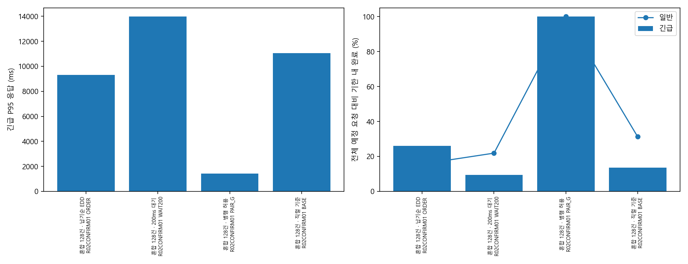
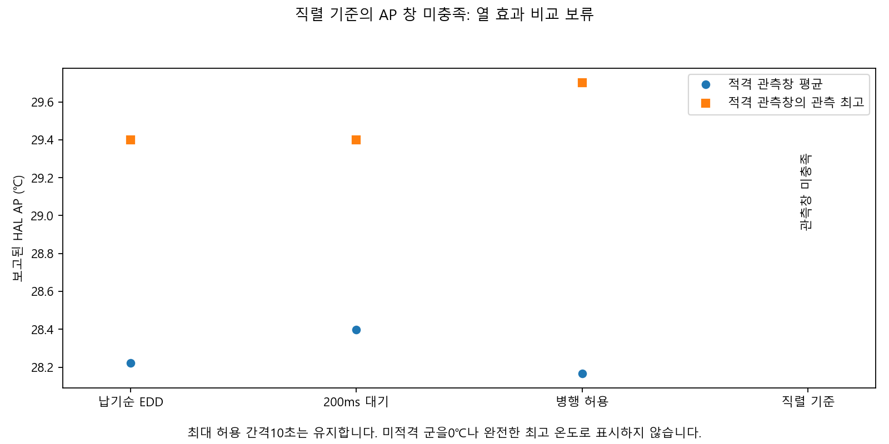
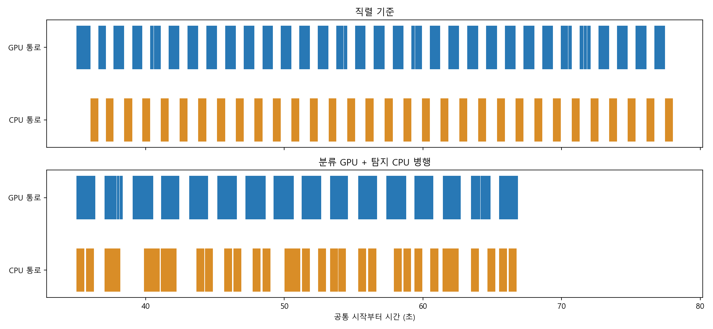
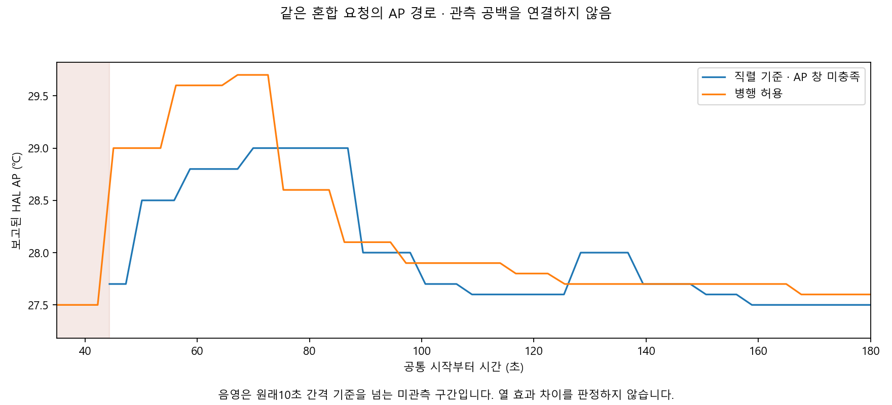
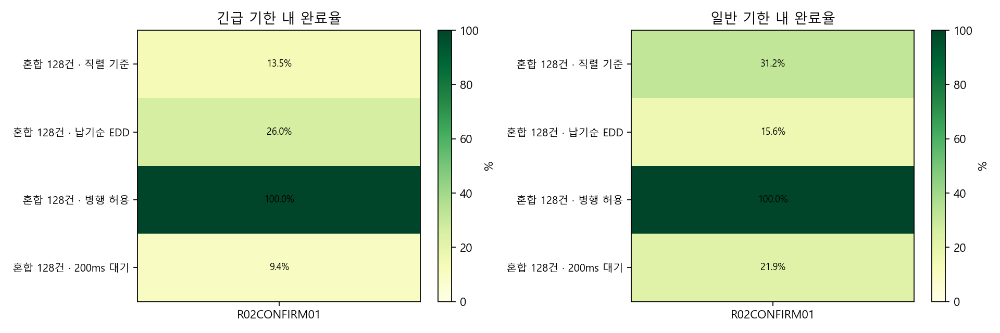
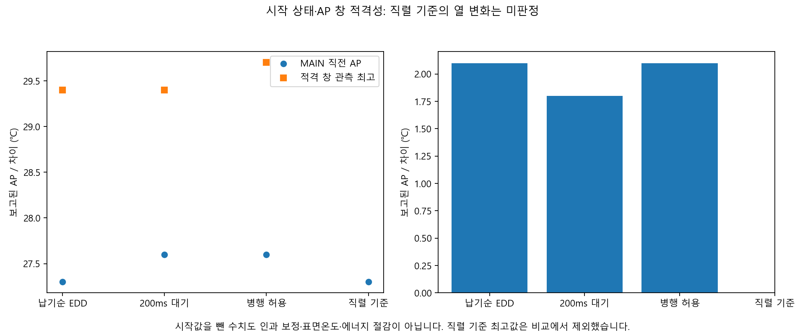

새 확인4/40회 회수·512요청 완료,36회 미실시. 직렬 기준 AP 창은12.34초 공백으로 미적격이므로 열 효과 비교 보류. J 미판정.
등록된 확인 실측: 에너지·표면온도 검증과 구분합니다. 시작 AP와 실제 호스트 소스를 군별로 기록했습니다. 시작 상태·소스·대기·워밍업 원장을 함께 보십시오. J는 계산 불가이며, AP는 HAL 읽기값입니다.
서비스·HAL 읽기값을 비교합니다. 표면 온도·센서 정확도·검증된 에너지 절감을 뜻하지 않습니다. 실패·미실행은 attempts.csv에 보존했습니다.
sessions.csvattempts.csvrequests.csvpaired.csvpaired_intervals.csvreported_AP.csvbattery_API_unvalidated.csv





